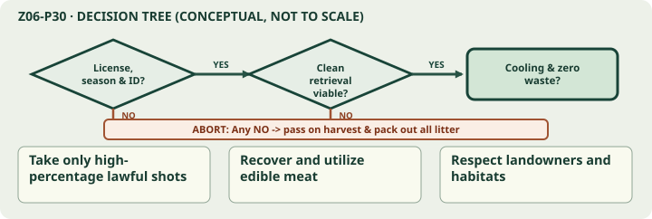

Z06-P30 · Hunting and fishing · New manuscript
Conservation Ethics, Fair Chase and Wanton-Waste Prohibitions
Uphold statutory wanton-waste prohibitions, ethical shot selection, and prompt retrieval responsibilities during lawful harvest.
When it applies · All lawful hunting and fishing activities.
Equipment · Current DNR regulations, tracking light, game bags, cooler.

Actions
- Verify before harvesting any legal fish or game animal that you have the lawful right, equipment, cooling capacity, and transport plan to recover and utilize the edible meat without wanton waste.[H01, H02, H17]
- Pass up uncertain, long-range, obscured, or late-light shots where clean recovery is doubtful, and make every lawful effort to track and retrieve wounded game.[H02, H03]
- Pack out all spent shells, monofilament fishing line, lead sinkers, and litter because discarded line and tackle kill waterbirds and wildlife.[H07, L13]
Failure recognition · Harvesting fish or game in hot weather without ice/transport or leaving tangled fishing line along shores causes illegal waste and wildlife entanglement.[H07, H17, L13]
Verify · Recovery plan, cooling gear, litter/line pack-out, and lawful utilization are prepared prior to harvest.[H02, H17]
Stop or change course · Stop harvesting immediately once personal cooling, transport, or legal bag/possession capacity is reached.[H01, H02, H17]
Evidence and editorial notes
- H01 · Minnesota DNR · Minnesota Fishing Regulations (Current web edition)
- Section: Licensing, seasons, limits, and waterbody-specific rules · Conditions: Minnesota angling across inland, border, and designated waters
Support: Anglers must hold a valid license unless explicitly exempt and verify current season dates, possession limits, size slots, and special waterbody rules before fishing.
Limitations: Regulations change annually and differ on border waters, trout streams, and tribal/ceded territories; no emergency creates an automatic legal exemption. · Conflicting evidence: None noted.
Editorial note: Establishes Z06 fishing authority gate. · Specialist reviewer: Minnesota DNR fisheries and legal reviewer
Primary source · checked 2026-11-25 - H02 · Minnesota DNR · Minnesota Hunting and Trapping Regulations (Current web edition)
- Section: Hunting licenses, zones, seasons, and legal methods · Conditions: Minnesota big game, small game, and bird hunting
Support: Hunters must verify current license, permit-area, season, legal-hours, blaze-clothing, and method rules with the governing authority prior to afield activity.
Limitations: Private-land trespass law, municipal ordinances, and tribal jurisdiction apply separately; emergencies do not suspend wildlife law. · Conflicting evidence: None noted.
Editorial note: Establishes Z06 hunting authority gate. · Specialist reviewer: Minnesota DNR wildlife law reviewer
Primary source · checked 2026-11-25
Current assessment · A04-H02 (2026-11-25) · Bounded support confirmed (A04): DNR publishes the applicable checks and updates. No season date, license decision or exception is approved by this record. Limits: Specialist review PENDING (Minnesota DNR wildlife law reviewer); publication HOLD. All release decisions pending. - H03 · Minnesota DNR · Firearms Safety Certification and Hunter Education (Current web edition)
- Section: Four fundamental firearm safety rules and certification · Conditions: Any firearm handling, transport, or field carry
Support: Treat every firearm as loaded, keep the muzzle in a safe direction, keep finger off the trigger until ready to shoot, and verify target and what is beyond it.
Limitations: Certification is required by age/statute in Minnesota; written summaries never substitute for formal certified safety instruction. · Conflicting evidence: None noted.
Editorial note: Mandatory Z06 bounded weapon-safety gate. · Specialist reviewer: Certified hunter-education and firearm safety instructor
Primary source · checked 2026-11-25
Current assessment · A04-H03 (2026-11-25) · Bounded support confirmed from an alternate source (A04): Basic safe handling principles only. No firing instruction, exercise or equipment qualification. Limits: Specialist review PENDING (Certified hunter-education and firearm safety instructor); publication HOLD. All release decisions pending. - H07 · Minnesota DNR · Aquatic Invasive Species Laws and Clean-Drain-Dry Rules (Current web edition)
- Section: Clean, Drain, Dry aquatic invasive species law · Conditions: Moving watercraft, angling gear, waders, or bait between waterbodies
Support: Minnesota law requires cleaning aquatic plants/zebra mussels from gear, draining all water with plugs removed, and disposing of unwanted bait in trash.
Limitations: Never transport live fish or lake water away from infested waters except under explicit statutory permit. · Conflicting evidence: None noted.
Editorial note: Mandatory Z06 conservation/AIS compliance. · Specialist reviewer: Aquatic invasive species specialist
Primary source · checked 2026-11-25 - H17 · Minnesota DNR · White-Tailed Deer Hunting and Management in Minnesota (Current web edition)
- Section: Big-game seasonal ecology and field-hygiene cooling · Conditions: White-tailed deer habitat, rut/winter yarding, and meat spoilage limits
Support: Rapid cooling below 40 F, keeping carcasses clean of gut contents and dirt, and protecting meat from insects prevent bacterial spoilage.
Limitations: Warm autumn weather accelerates spoilage within hours; abandon harvest if safe transport and cooling cannot be achieved. · Conflicting evidence: None noted.
Editorial note: Connects Z06 harvest to cold-chain food safety. · Specialist reviewer: Wildlife manager and food-safety specialist
Primary source · checked 2026-11-25 - L13 · Minnesota DNR · Scientific and Natural Areas Visitor Rules and Prohibitions (Current web edition)
- Section: Zero-disturbance scientific preserve ethics · Conditions: Sensitive habitats, wetlands, and rare-species corridors
Support: Natural-area conservation prohibits altering vegetation, digging pits, or leaving wire/cordage debris that entangles wildlife indefinitely.
Limitations: Abandoned wire or monofilament creates persistent ghost-entanglement hazards. · Conflicting evidence: None noted.
Editorial note: Addresses ghost-gear and environmental restriction. · Specialist reviewer: Conservation ecologist
Primary source · checked 2026-11-25
Current assessment · A04-L13 (2026-11-25) · Reopened: earlier closure narrowed (A04): Site rules support protection and restrictions. They do not establish a universal rule across land classes or an indefinite entanglement duration. Limits: Specialist review PENDING (Conservation ecologist); publication HOLD. All release decisions pending.
Source lineage · New manuscript (Z06 P17 conservation) · Classification · New manuscript.